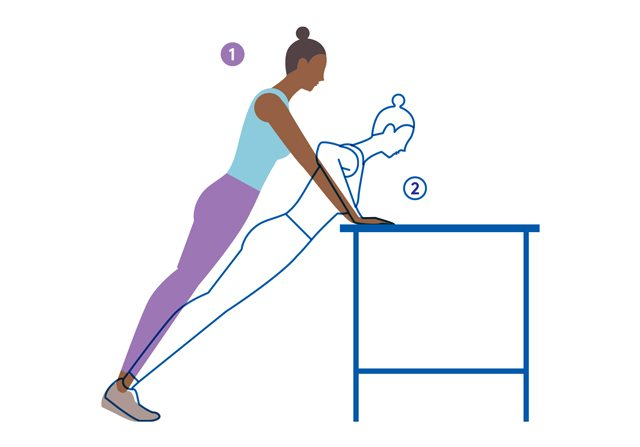

The types of pushups
Full pushups

A full pushup is either a full from handstand, down to chest on the ground back up.
Or can be from the ground, up fully in the air back to the ground again.
This type of pushup is worth maximum points for your team
Knee pushups

To protect your knees you can put a yoga matt or pillow under them when doing pushups.
A knee pushup is similar to a full pushup, except you pivot on your knees instead of your feet.
This type of pushup should be done if you have difficulties doing full pushups.
You can do this type of pushup in combination with full pushups. E.G. you get too tired with the full pushups that you can now only do them from the knees.
If you are recovering from injury and have been doing wall pushups you may attempt a few of these as a part of your recovery.
This pushups are worth less than full pushups, but they will still help your team.
Incline/Table pushups

With this type of pushup you use a table or other object so that your body is on an angle to the floor.
This is currently considered the same difficulty as a knee pushup and is therefore worth the same amount of points as a knee pushup.
Wall pushups

This is the best way to start out if you can not do knee or full pushups.
If you have an injry and have been advised by a therapist on a certain way on doing wall pushups, you should do them that way.
When you feel ready, you should then move on to doing knee pushups.
As these are the easiest type of pushups, these will gain your team the least amount of points. However they will still go towards your team's total and help your team reach their goal
A word on cheating!
This entire system is based on honesty.
Cheating would just be stupid and rob you and others of a fun experience
It is the hope that this competition will be intense. That you will want to do more to push your team that much closer to victory.
This competition has been designed on purpose to fill you with a sense of urgency to motivate you to do more!
Please take this in the way it was intended to help motivate you to do more pushups and not artifically inflate your numbers.
This competition requires everybody to do the right thing!!
Some additional grey areas to clarify:
Your pushups should be entered in as soon as you do them. No storing up pushups to be entered in later on...
You should be doing the types of pushups that best fit your current level of fitness.
Have fun, play fair and may the best team win :)